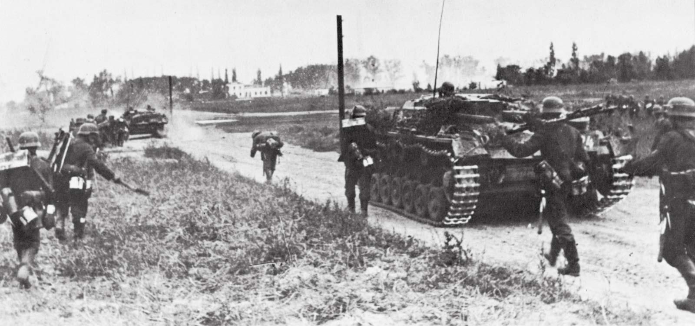
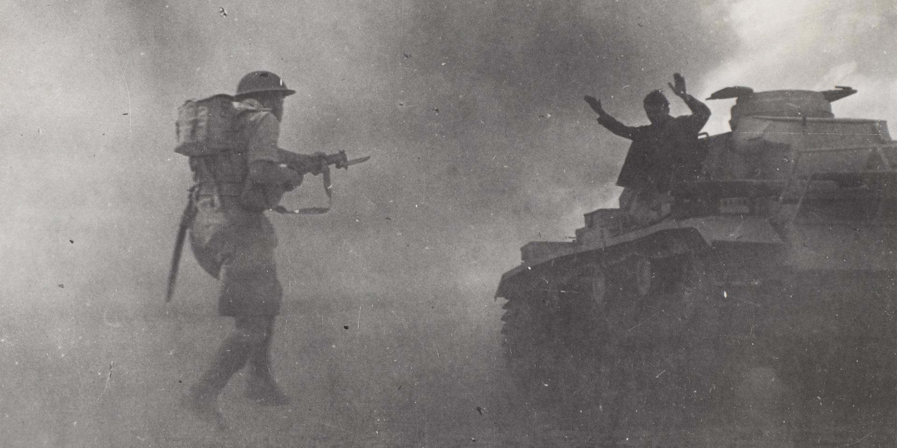
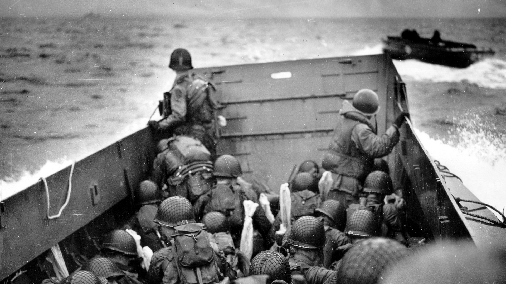
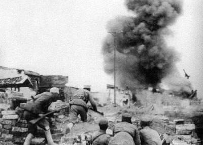
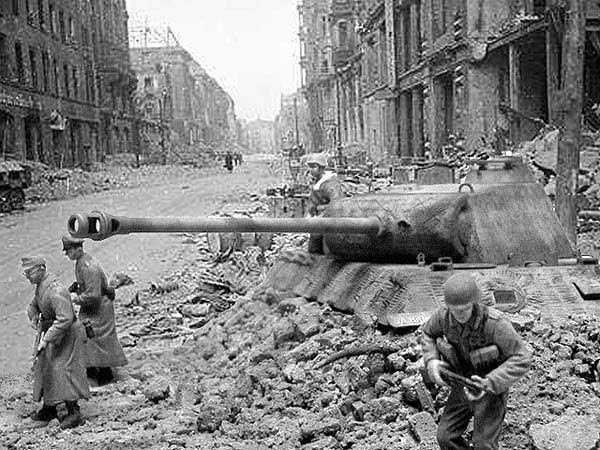
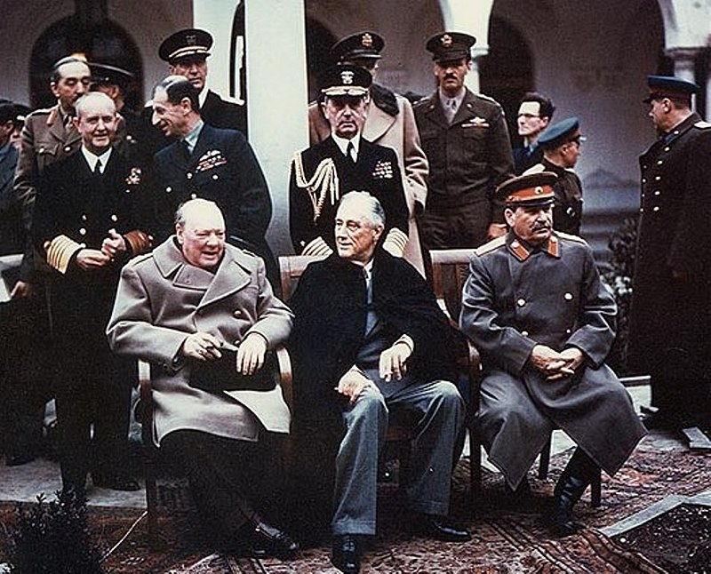
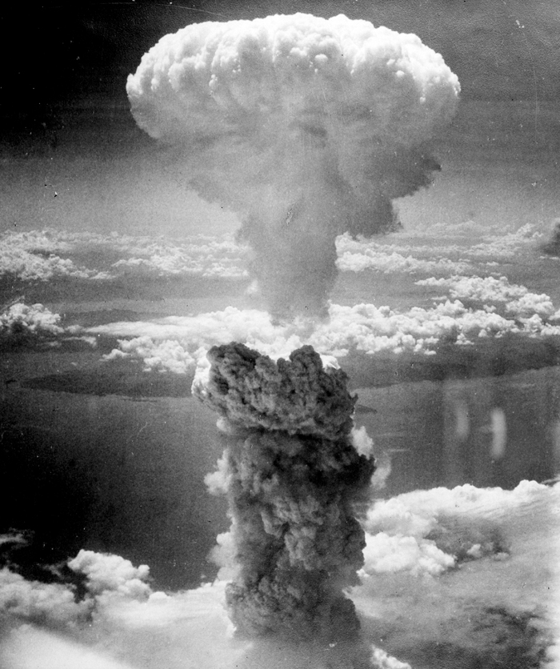
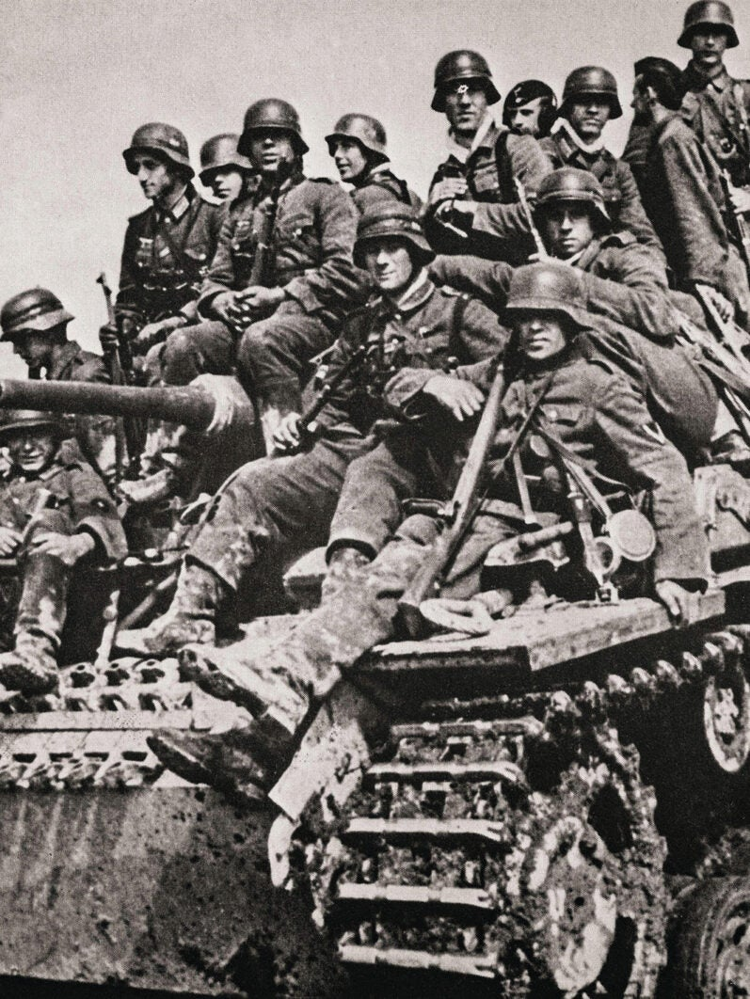
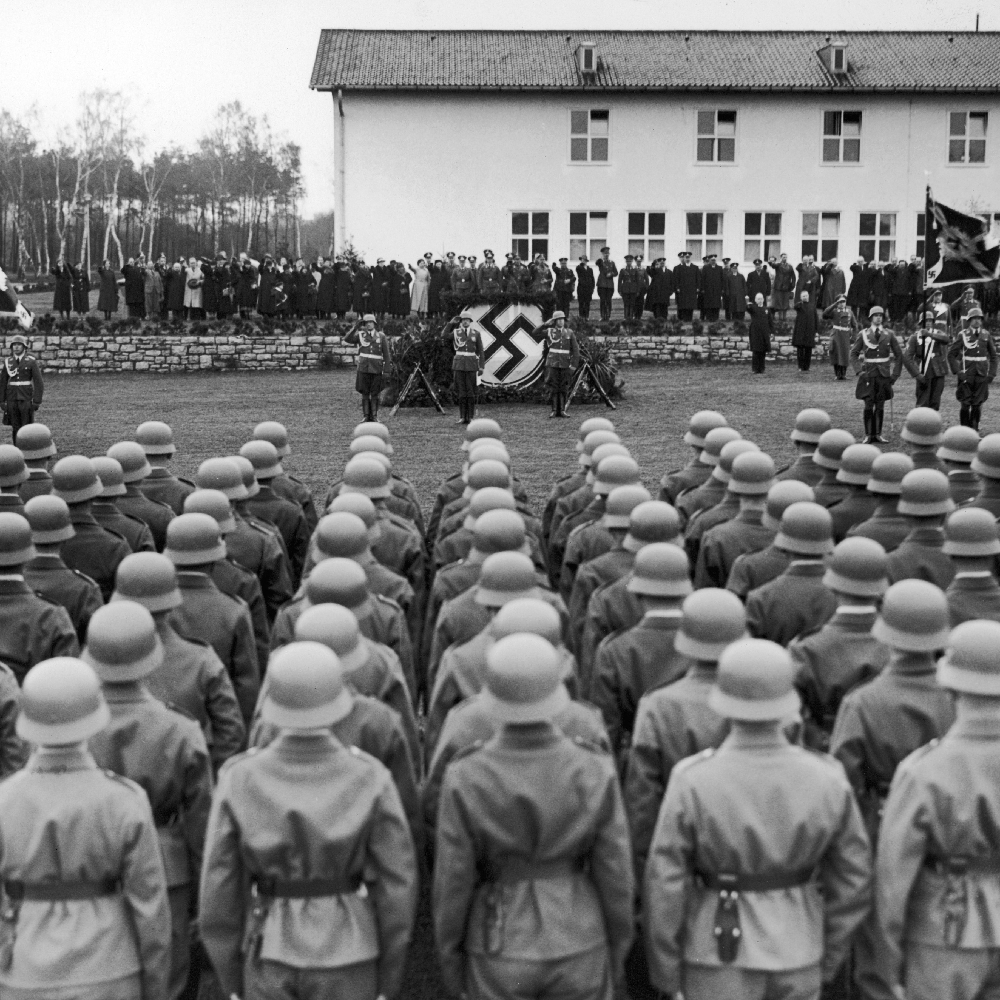

Ide tenk idemo i mi.Ruke u vis.Dan D - iskrcavanje u Normandiji.Napad je najbolja obrana.Razrušeni grad.Konferencija u Jalti - Churchill, Roosevelt i Staljin.Atomska bomba - Hiroshima i Nagasaki.Jedna za uspomenu.Postrojavanje njemačke vojske.